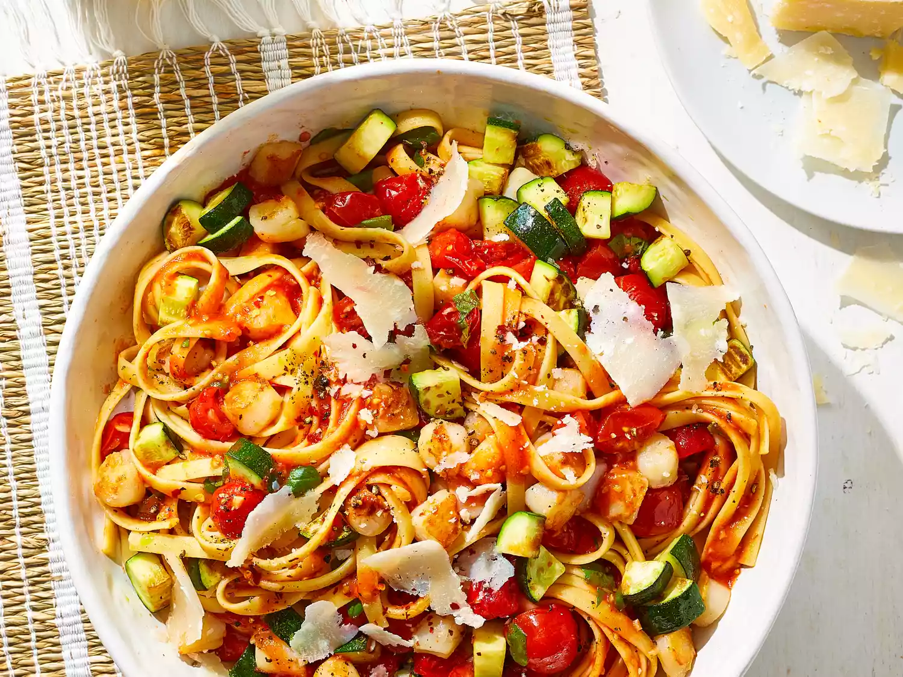

Pasta with Scallops, Zucchini, and Tomatoes

This scallop pasta recipe with tomatoes, garlic, and zucchini is my family's favorite summer meal!
Ingredients :
- 1 pound dry fettuccine pasta
- ¼ cup olive oil
- 3 cloves garlic, minced
- 2 zucchinis, diced
- ½ teaspoon salt
- ½ teaspoon crushed red pepper flakes
- 1 cup chopped fresh basil
- 4 roma (plum) tomatoes, chopped
- 1 pound bay scallops
- 2 tablespoons grated Parmesan cheese
Steps
- Bring a large pot of lightly salted water to a boil. Add pasta and cook for 8 to 10 minutes or until al dente; drain.
- Meanwhile, heat oil in a large skillet; stir in garlic and cook until tender. Add zucchini, salt, and red pepper flakes; sauté for 10 minutes. Stir in chopped tomatoes, bay scallops, and fresh basil; simmer for 5 minutes, or until scallops are opaque.
- Pour sauce over cooked pasta and serve with grated Parmesan cheese.
Nutrition Facts
(per serving)
- 335 Calories
- 9g Fat
- 46g Carbs
- 19g Protein